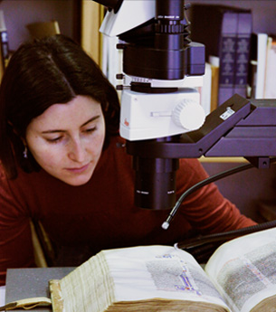

| Manuscript Illumination: Non-Invasive Analysis, | ||
| MINIARE |
Research And Expertise |
|

About Us
The Project Team
Dr Stella Panayotova Keeper of Manuscripts and Printed Books, Fitzwilliam Museum
Professor Stephen Elliott Chemical Physics Group, Department of Chemistry
Dr Spike Bucklow Research Scientist, Hamilton Kerr Institute
Edward Cheese Conservator of Manuscripts and Printed Books, Fitzwilliam Museum
Dr Paola Ricciardi Research Scientist, Fitzwilliam Museum
Dr Deirdre Jackson Art Historian, Department of Manuscripts and Printed Books, Fitzwilliam Museum
Cambridge research network
Dr Pietro Cicuta University Lecturer, Department of Physics
Dr Sachiko Kusuwaka Affiliated Lecturer, Department of the History and Philosophy of Science
Dr Nigel Morgan Emeritus Professor, Department of History of Art
Georgina Doji Computer Associate, Fitzwilliam Museum
Dr Carola-Bibiane Schönlieb University Lecturer, Department of Applied Mathematics and Theoretical Physics
International research network
Victoria & Albert Museum, London Dr Lucia Burgio, Senior Object Analysis Scientist
Durham University Prof Richard Gameson, Department of History
Prof Andrew Beeby, Department of Chemistry
Getty Conservation Institute, Los Angeles Dr Karen Trentelman, Senior Scientist
J. Paul Getty Museum, Los Angeles Nancy Turner, Manuscripts Conservator
ICIS-CNR, Padova Dr Luca Nodari, Researcher
National Gallery of Art, Washington DC Dr John Delaney, Senior Imaging Scientist
Dr Kathryn Dooley, Postdoctoral Research Fellow
Michelle Facini, Paper Conservator
Nottingham Trent University Dr Haida Liang, Imaging Science for Archaeology & Art Conservation research group
University of Antwerp Prof Koen Janssens, Department of Chemistry
Stijn Legrand, Department of Chemistry